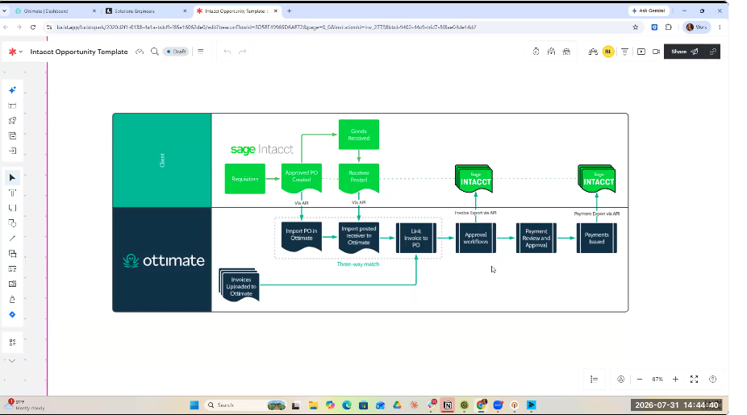
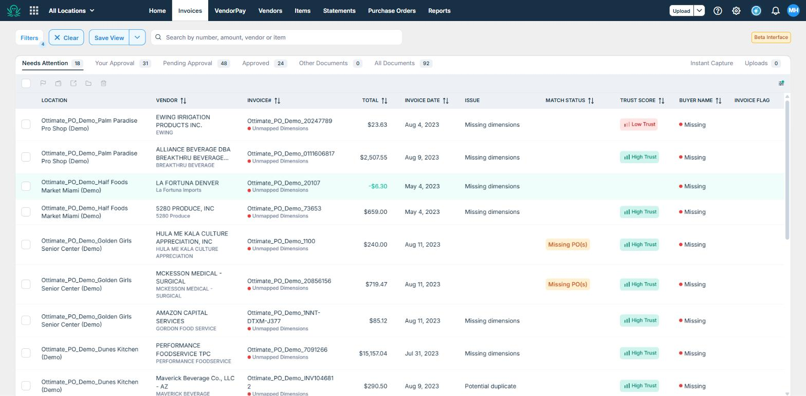
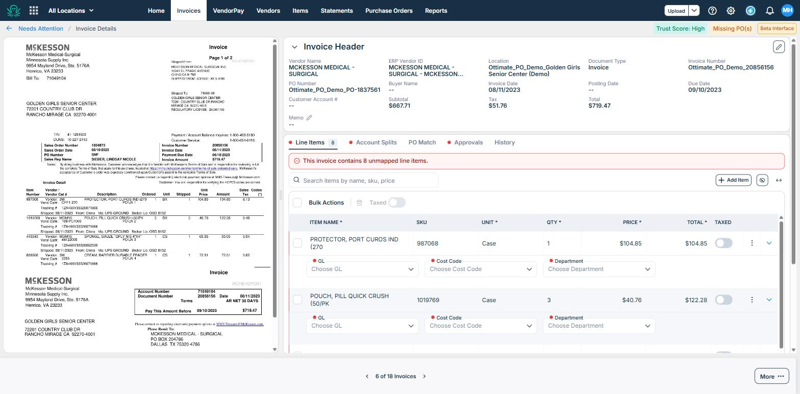
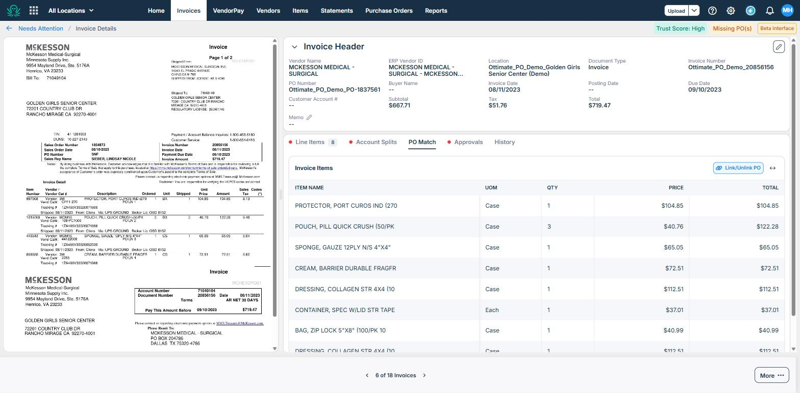
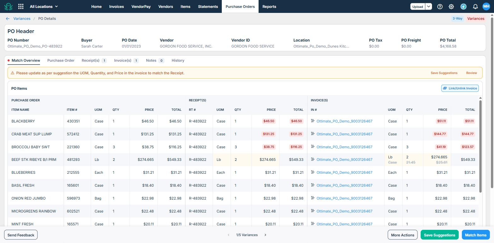
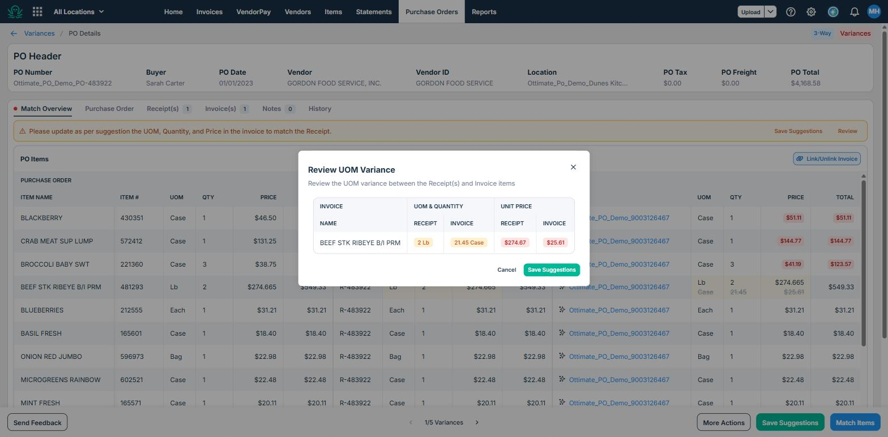
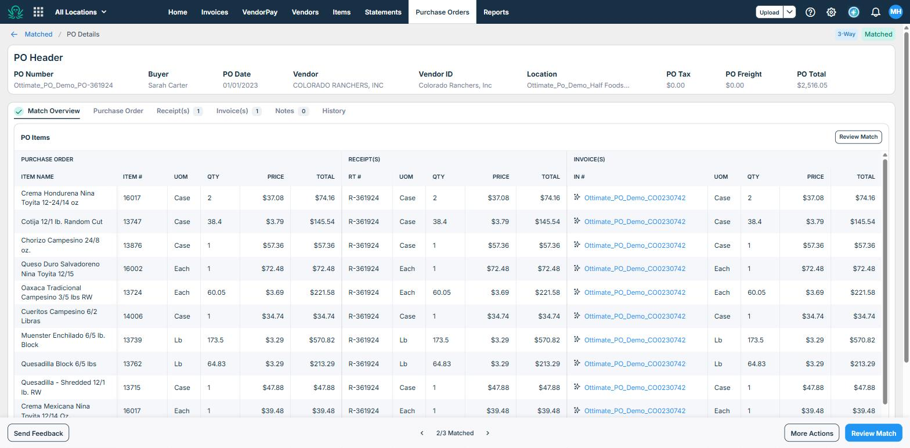
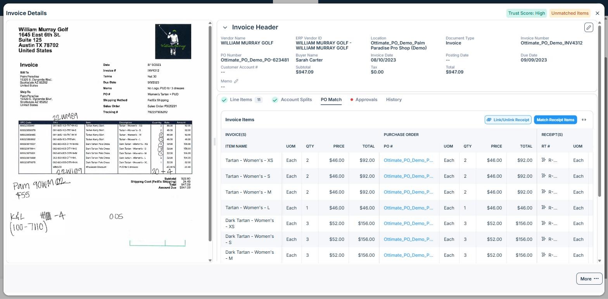
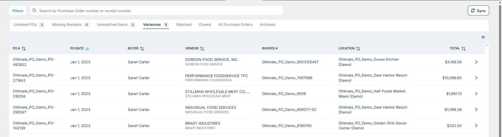

Reusable, customer-agnostic talk track for the PO Match demo. Delivery is built on the Tell–Show–Tell method and the demo principles in Robert Riefstahl's Demonstrating to Win! — lead with the differentiator, stay in the buying zone, tie every feature to a business outcome, and close on the payoff. ERP shown as an example: Sage Intacct. Runtime: ~30–40 minutes.
Demo environment: demo-2026-api.plateiq.com/demoapp · Buyer on all seeded POs: Sarah Carter
🔑 No access? If the demo environment does not load for you, contact your manager or your Ottimate rep to request access.
You can run this cold, but it delivers best if you know why it's ordered the way it is. Six ideas from Demonstrating to Win! drive the structure:
Match each payoff to whoever's actually listening. If you don't know who's in the room, ask in discovery.
| Persona | What they feel today | The payoff to hit |
|---|---|---|
| AP processor / clerk | Chasing missing POs, keying GL codes by hand, opening three tabs to reconcile | "You stop hunting. Coding, matching, and approval happen for you — exceptions come to you, you don't go find them." |
| AP manager / controller | No control over what auto-approves; can't trust the coding; too many touches | "You set the thresholds and the approval policy. Clean matches flow through; only real variances stop for a human." |
| CFO / finance leader | Overbilling and price creep slip through; tax hits a tax-exempt entity; slow close; and another system to roll out | "You catch the money leaks and you close faster — with no new system for the team to learn. Matching lives inside the AP workflow they already use." |
The single most important framing, used throughout: all the PO and receipt data lives in Ottimate, and matching happens inside the standard invoice workflow the customer already knows. You're adding a matching layer, not a new system to learn. This is the differentiator — say it early, say it again at the close.
Every seeded invoice and what it's built to demonstrate. Pick one invoice per concept you want to show — resist the urge to show them all (that's spray-and-pray).
Say it right: "amount-based" vs. "quantity-based" below describes how each seeded PO item is configured — it's a per-item setting driven by config, not something determined by whether the match is 2-way or 3-way. Amount matching runs on both 2-way and 3-way POs. Don't teach a rule like "2-way is always amount-based."
| Vendor | Invoice | Match type | What it shows |
|---|---|---|---|
| Hula Me Kala Culture Appreciation | 1100 | 2-Way (amount-based) | Remove last PO digit → auto-links, auto-matches, sets dimensions, approves via PO policy |
| McKesson | 20856156 | 3-Way (quantity-based) | Same auto-link flow, quantity-based |
| Vendor | Invoice | Match type | What it shows |
|---|---|---|---|
| Gordon Food Service | 9006406564 | 3-Way | 1 unmatched item that appears as a suggestion |
| William Murray Golf | INV4312 | 3-Way | 1 shipping item to exclude from the match |
| Alliance Beverage (Breakthru AZ) | 111606819 | 2-Way | 3 unmatched items that appear as suggestions |
| Vendor | Invoice | Match type | What it shows |
|---|---|---|---|
| Individual Foodservice | 609077-00 | 2-Way | 3 price variances + 1 UOM variance |
| Gordon Food Service, Inc. | 9003126467 | 3-Way | 3 price variances + 1 UOM variance |
| Brady Industries | 8199790 | 2-Way | 2 price variances |
| Performance Foodservice TPC | 7087689 | 3-Way | 3 price + 1 UOM; linked to 2 different receipts |
| Stillman Wholesale Meat | 9559 | 3-Way | 2 price variances + 2 UOM variances |
| Vendor | Invoice | Match type |
|---|---|---|
| Brady Industries | 8232945 | 2-Way |
| Colorado Ranchers | CO0230742 | 3-Way |
| Nessi Foods | 5456 | 2-Way |
Ordered for primacy and recency: the differentiating "aha" comes early (segment 2), the business outcome and next step land last.
| # | Segment | Riefstahl move | Demo invoice | Screen |
|---|---|---|---|---|
| 0 | Open on the promise | Lead with the payoff, not "about us" | — | — |
| 1 | Set the model (fast) | Frame, then get out of the weeds | — | Workflow diagram |
| 2 | The "aha": link → auto-match → auto-approve | The wow moment — primacy | McKesson 20856156 | Invoice → PO Match → matched |
| 3 | You stay in control | Tie to WIIFM (manager/controller) | (same) | — |
| 4 | Exceptions come to you (variances) | Show you surface, not hide | Gordon Inc. 9003126467 | Match Overview + Review UOM |
| 5 | The safety net (shipping & tax) | Differentiator for tax-exempt | William Murray INV4312 | PO Match (shipping) |
| 6 | Proof it's real (already matched) | Reinforce the clean end-state | Colorado Ranchers CO0230742 | Match Overview (all green) |
| 7 | Close on the outcome + next step | Recency — the payoff, restated | — | — |
⚠️ Everything in quotes is an example, not a script to read. The wording assumes a solution engineer presenting with Sage Intacct as the ERP — swap in your own role, your ERP, and your own voice. If you are an AE presenting solo, drop the "I run the technical side" framing entirely. Keep the structure (Tell → Show → Tell) and the business payoff; change the words.
Tell (the hook): Skip the long preamble. Establish who you are in one line, then lead with the single biggest payoff.
(Example — replace the bracketed role with your own.)
"Quick on me — I'm [your role] at Ottimate. I help build your scope, so today interrupt me any time; the more you tell me about your process, the sharper the scope. Here's the one thing I want you to watch for: in a few minutes I'm going to take an invoice that has no coding on it at all, and you'll watch it find its PO, code every line by itself, and approve itself — inside the same invoice screen your team already uses. No new system to log into. That's PO Match."
Why this works (Riefstahl): the opening states the strongest, most differentiating outcome as a headline — it earns attention before you've shown a single screen.
Tell: "Before the live piece, ten seconds on how the pieces connect — then I'll show you the real thing."
Show: the three-way match workflow diagram → Screenshot 1. Walk it left to right, once.
"On your side in the ERP, the requisition happens, the PO is approved, and — for three-way — goods are received. Via our API we sync the PO and the receipt into Ottimate. When the invoice arrives, we link it to the PO and receipt and run the three-way match across all three. No receiver expected? We just link and match invoice-to-PO. After matching, the invoice runs your normal approval workflow and posts back to the ERP."
Tell (so what): "The point isn't the plumbing — it's that all of this happens where your team already works. Two-way is the same picture minus the receiver step."
⚠️ Buying-zone discipline: this is framing, not the show. Don't linger on the API or field mappings here — that's the scoping call. If someone pulls you deep, park it and move to the aha.
This is the moment the whole demo is built around. Slow down, few clicks, let it land.
Tell (before): "Here's an invoice that just came in. It's fully extracted, but look — no dimensions on any line. No GL, no account splits. Right now this is work someone has to do by hand." Point to the red "contains 8 unmapped line items."
Show: invoice before match, empty GL/Cost Code/Department → Screenshot 3.
Tell (before the click): "I'll go to the PO Match tab. In the demo the PO number is intentionally off by one digit — which is also exactly what happens when a vendor drops or fat-fingers the PO number. Watch what one correction does."
Show: PO Match tab → remove the last digit so the number is correct → the system auto-links to the PO → Screenshot 4.
Demo tip: removing the last digit and saving is the cleanest way to trigger the auto-behavior live. If the PO number is already correct, this happens automatically behind the scenes — say that out loud so they know it's not a party trick.
Tell (the payoff — say this slowly): "That one link did three things. It pulled the items and dimensions from the PO and set every account split for me. It ran the match and — because nothing's in red — every line reconciled; red is always our 'look here' color. And because the invoice hit a fully-matched state, your PO approval policy auto-approved it — nobody had to touch it. There's nothing left on this PO, so it's fully satisfied; when it's closed on the ERP side, that closure syncs back and the PO closes out here too."
Show (the clean end-state): fully matched invoice/PO/receipt, all green → Screenshot 7 (Colorado Ranchers is a good finished example if you'd rather show a pristine state).
Tell (WIIFM): "For the person doing AP, the coding and the chasing just disappeared. For you running the function, it happened inside your workflow — nobody learned a new tool."
Tell: "Now, 'it approves itself' makes some finance leaders nervous — good. You're in control of that." Tie back to discovery answer #5.
"Because this invoice reached a fully-matched state, it's your call: keep a human on it, or let your PO approval policy auto-approve it. If your worry is coding accuracy, validate that at PO creation — that's when you have the leverage to tell an end user the PO is wrong — so AP doesn't re-approve matched invoices. Or keep a final review step in Ottimate. You can also build approval policies that route to the PO's buyer (the buyer user on the PO) — for example, send anything with a variance to the buyer while clean matches auto-approve."
Tell (best practice): "The cleanest setup is when the PO and Ottimate agree — if something needs to change, change it on the PO side and Ottimate reflects it. You keep full flexibility to adjust in Ottimate when you need to."
Tell: "That was the happy path. Here's one that isn't — and this is where the tool earns its keep. Anything with a variance gets pulled to the top and grouped, so exceptions come to you instead of you hunting for them."
Show: Match Overview with red price/UOM mismatches → Screenshot 5.
Tell (before Review): "I'll click Review to see only the lines that need a human."
Show: Review UOM Variance (2 Lb vs. 21.45 Case) → Screenshot 6. Walk two cases:
Tell (control — thresholds): "And you decide what's even worth flagging. Set thresholds — a dollar amount or a percentage — so a one-cent or one-dollar difference never interrupts anyone. Expose everything, or only what falls outside your tolerance."
Tell (WIIFM — controller): "This is the money leak most teams can't see today — price creep, one line at a time. Here it's flagged the moment it happens."
Other variance invoices for variety: Stillman 9559 (2 price + 2 UOM), Performance 7087689 (linked to 2 receipts), Individual Foodservice 609077-00 (2-way), Brady 8199790 (2 price).
Tell: "Last capability, and it's a favorite: unmatched items. Auto-matching looks at SKU, description, and more — if something's genuinely different, it suggests a match for you to confirm. The most common real-world case is shipping and tax."
Show: the invoice's shipping line in the PO Match view → Screenshot 8.
"Sometimes freight or tax is on the PO, sometimes it's an estimate, sometimes it's not expected at all. If it's on the PO, we match it like any other line. If it's not — like this shipping charge — we flag it as unmatched. You can exclude it from the match so it doesn't hold anything up (it stays on the invoice and expenses normally), or, for sales tax on a tax-exempt entity, remove it from the invoice entirely with the right permissions."
Tell (WIIFM — the differentiator): "If you're tax-exempt and tax sneaks onto an invoice, most systems just pay it. Here, the match becomes a second safety net — it flags the tax before it goes out the door."
Also: Gordon 9006406564 (1 unmatched suggestion) and Alliance 111606819 (3 suggestions) show the suggestion flavor.
Tell: "Everything I just walked through by hand — the system does on its own overnight. Here's one that came in already matched and approved by policy. This is your steady state." (Keep this brief — it's reinforcement, not a new act.)
Show: Colorado Ranchers, all-green Match Overview → Screenshot 7.
Tell (the payoff, restated — this is what they'll remember):
"So, back to what I promised at the start: you watched an invoice with no coding link to its PO, code every line, and approve itself — inside the AP workflow your team already uses. Clean invoices flow through on the thresholds and policies you set; real exceptions stop for a human, surfaced instead of hunted. No new system to roll out. That's PO Match."
Tell (next step — make it concrete):
(Example — if you are not the person who runs scoping, say who will.)
"If that's valuable, the next step is a detailed scoping call. We'll bring best practices from our product team for your structure — services, amount-based, quantity-based — we'll walk your scenarios end to end, and I'll put together a recommended scope tied to your goals. What's the best way to get that on the calendar?"
Straight from Demonstrating to Win! — the fastest way to lose a room is self-inflicted.
Harmful habits:
Harmful words (they leak uncertainty):
Captured from the live demo environment.
The mental model: the ERP creates/approves the PO and posts the receiver → Ottimate imports PO + receipt via API → invoice is linked and three-way matched → normal approval → posts back to the ERP → Vendor Pay. Use to frame, then move on.

Invoices flagged Missing PO(s) and Unmapped Dimensions. This is the "before" the demo resolves.

Extracted invoice with the red "8 unmapped line items" banner — no GL, Cost Code, or Department yet. This is the state you make disappear in the aha.

The invoice's PO Match tab with Link/Unlink PO. Remove the last digit of the PO number to auto-link (or it links automatically when the number is already correct).

The three-way Match Overview — Purchase Order / Receipt(s) / Invoice(s) side by side — with price mismatches in red (e.g., $46.50 vs. $51.11) and a Lb vs. Case UOM mismatch.

The pounds↔cases conversion up close: Receipt 2 Lb vs. Invoice 21.45 Case, unit price $274.67 vs. $25.61 — accept the suggestion, or teach the correct conversion.

A clean three-way match: green check on Match Overview, "3-Way / Matched" badge, every line reconciled across PO, Receipt, and Invoice. Nothing in red. Use for the aha payoff and the segment-6 reinforcement.

The invoice carries a shipping charge that isn't on the PO. Matched lines reconcile; the shipping line is flagged as unmatched to exclude from the match (stays on the invoice) or remove entirely for tax-exempt scenarios.

Where PO and receipt data lives, bucketed by Unlinked POs, Missing Receipts, Unmatched Items, Variances, Matched, and Closed. Useful for showing visibility without changing the customer's invoice process.

Delivery method adapted from Robert Riefstahl, Demonstrating to Win! Scenario data and screenshots from the PO Match demo environment (demo-2026-api.plateiq.com/demoapp) and the PO Match demo scenarios spreadsheet.